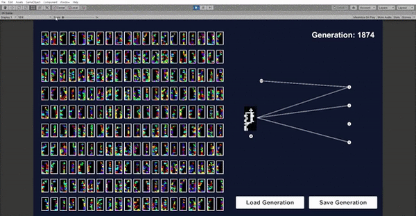

Tetris Evolutionary AI (NEAT)
A Tetris AI Implementation using NEAT for my final year's thesis
 View the full paperNEAT
This is my final year project in King's College London where I worked on a Tetris AI implementing the NEAT algorithm.
Full Repository available HERE.
The basic idea behind NEAT is to have a neural network that mutates over time to develop into one capable to compute more complex relationship between inputs and output through by evolving similarly to genetic evolution.
Since I was feeling confident about the project I decided to make my own twist and allow the AI to only read data through visual inputs, which means that it will only know if the pixel value is on or off at any given position and not any other relevant data like the height of the game state, or the Tetromino type it is currently holding.
However, the results were a bit underwhelmingh as the program didn't really manage to learn how to play the game properly within a few hours of training due to my hardware limitations.